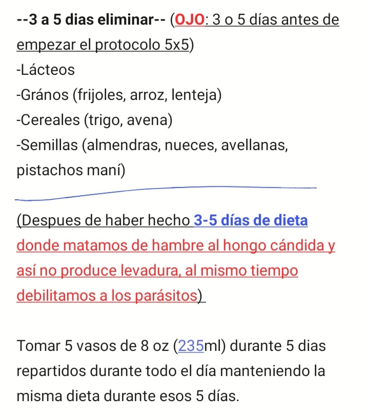

hola al publico en general, yo soy Yagamissael, quiero empezar contandote que sufro de intestino permeable desde hace 3 años atras, todas las mañanas entre las 6:00AM a 8:00AM me daban unos dolores horribles en el estomago tomando en cuenta que almorzaba, comia y cenaba con harina y en ese tiempo duré 5 dias sin cagar :O esto es un serio problema y le atruibuyo las causas de este problema es debido a que queria ahorrar dinero y todas las mañanas en la escuela desde mis 12 años hasta los 18 años de edad comia solo nachos o una gordita tomando en cuenta que la proporcion de los nachos son igual a la gordita de desebrada con aguacate que por cierto estaban reguenas con aguacate y todo estas son las razones las cuales creo me llevaron a este problema:
el Dr. Ludwig jhonson junto con varios conocimientos de medecina alternativa me llevaron a hacer los jugos de zanahoria con el protocolo 5x5 en el cual yo te dejo el link de su canal de youtube para que lo veas. Con este protocolo voy a curarme de el intestino permeable
cabe destacar que he estado practicando la respiración del dr frank suarez que tranquiliza el sistema nervioso en el episodio numero 1828 titulado como truco tranquilizante de la respiración, en mi experiencia cada vez que empiezo a hacer la respiración siento como me gruñen y duelen las tripas y yo lo atribuyo a la digestión y al empacho. es decir el aparato digestivo se activa, por lo cual yo utilizo esta técnica que permite digerir las comidas mas tiempo posible. También quiero mencionar que todas las mañanas cada que despierto hago ejercicios de respiración de wim hof ya que estos ejercicios otorgan otros beneficios, lo que sí no he hecho son duchas frias pero me gustaria volver a hacerlas muy pronto cuando termine el protocolo cinco por cinco jugos de zanahoria. En este blog pretendo documentar y hacer una sintasis sobre mi experiencia intentando curar mi intestino. Tengo fe en que el protocolo funcionará y yo tengo que ser una prueba, por lo cual desde este momento que estoy escribiendo este blog estoy en mi tercer dia con jugos de zanahoria, es decir, otros 2 días más y terminaré de hacer el protocolo cinco por cinco jugos de zanahoria.
debo empezar a decirte que sufro de un acne quistico parte del rostro y en la espalda, desde la adolecencia hasta ahora en adultez no se me ha quitado todo lo contrario, ha empeorado a tal punto que una vez me salieron dos granos tamaño familiar en cada nalga que ni si quiera me podía sentar :c asi que debo decirte que uno de los beneficios que noté es en la reduccion del tamaño del acné en la cara, especialmente los quistes, segundo beneficio es que los dolores de panza que tenía han disminuido considerablemente, anteriormente habia intentado el remedio sabila con miel y ese me ayudo varios días con el dolor de panza y ademas he visto varios testimonios en comentarios que esta planta convinada con miel es muy curativa para la piel y el sistema digestivo, terminando el protocolo es lo segundo que haré para seguir con la cura. también debo mencionar que he usado un poquito de plata coloidal pero como no conozco muy bien su protocolo para ingerirla tomada prefiero solo usarla en la piel. Por lo cual la he estado usando para la piel. Al terminar el protocolo voy a tomar probióticos debido a que tomé un poco de plata coloidal.